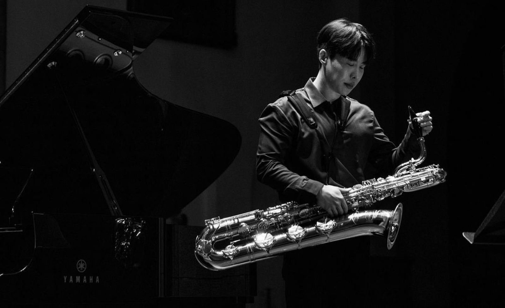
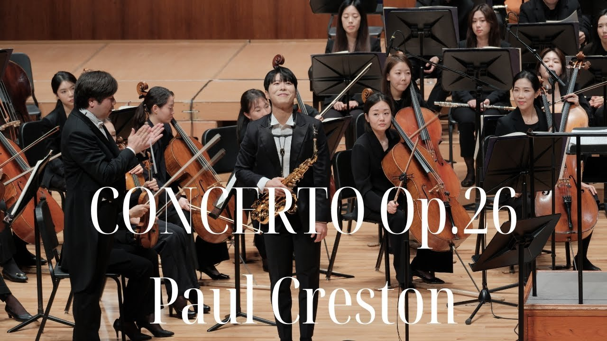

01Solo recital
솔로 리사이틀Solo Recital
프랑스 음악부터 현대 작품까지. 홀에 맞춰 구성합니다.French repertoire to contemporary works, built for your hall.
문의하기Enquire→
솔로 리사이틀 문의
호흡으로 클래식의 경계를 넓히는 색소포니스트. Expanding the boundaries of classical music.


클래식 색소폰의 영역을 끊임없이 넓혀온 연주자. 프랑스 리옹 국립음악원 최고연주자과정을 졸업하고, 미국 신시내티 음악대학에 전액 장학생으로 입학해 한국인 최연소로 박사(D.M.A.)를 취득했습니다. 신시내티 콩쿠르와 한국음악협회 콩쿠르 1위, MTNA 국제 콩쿠르 2위.A saxophonist who has continually expanded the boundaries of his instrument. He completed the Prix de Perfectionnement at the Conservatoire National Supérieur de Musique de Lyon, then earned his Master’s and — as the youngest Korean ever to do so — a Doctor of Musical Arts at the University of Cincinnati on a full scholarship. First prize at the Cincinnati Competition and the Korea Music Association Competition, second prize at the MTNA National Competition.
작곡가 수전 보티의 색소폰 콘체르토를 신시내티 오케스트라와 세계 초연했고, 한국인 클래식 색소포니스트 최초로 링컨센터에서 리사이틀을 열었습니다. KBS교향악단·국립심포니오케스트라를 비롯한 국내 주요 오케스트라와 협연했으며, 소프라노 조수미와의 협연 투어, 지휘자 장한나와의 대전 그랜드 페스티벌 리사이틀을 함께했습니다.He gave the world premiere of Susan Botti’s Saxophone Concerto with the Cincinnati Symphony Orchestra, and became the first Korean classical saxophonist to give a recital at Lincoln Center. He has appeared with the KBS Symphony, the National Symphony Orchestra of Korea and leading Korean orchestras, and toured with soprano Sumi Jo and given a recital with conductor Han-Na Chang at the Daejeon Grand Festival.
에세이 『조용히 계속하는 사람』(2026)을 출간했고, 현재 서울대학교 음악대학 출강, 클래식색소폰협회 회장, 브랜든 색소폰 오케스트라 음악감독·지휘자로 활동합니다.His essay The Person Who Continues Quietly was published in 2026. He teaches at Seoul National University and serves as President of the Classical Saxophone Association of Korea and Music Director and Conductor of the Brandon Saxophone Orchestra.

프로그램을 고르고 날짜·장소를 보내주세요. 24시간 안에 제안서와 프로필을 보내드립니다.Choose a programme, send the date and venue. A proposal and profile follow within 24 hours.
프랑스 음악부터 현대 작품까지. 홀에 맞춰 구성합니다.French repertoire to contemporary works, built for your hall.
이베르·글라주노프·크레스턴·달·몰리넬리·보티.Ibert, Glazunov, Creston, Dahl, Molinelli, Botti.
『조용히 계속하는 사람』. 낭독과 연주를 곁들일 수 있습니다.His essay, with optional readings and live performance.
브레인·리더십·웰니스. 연주와 해설.Brain, leadership, wellness — music and commentary.
음악대학·영재원·페스티벌. 테크닉과 무대 태도.Conservatories, gifted programmes, festivals.
창단·지휘하는 앙상블과 갈라·축제 무대.Galas and festivals with the ensemble he founded and conducts.
프로그램·일자·장소를 보내주세요.Send programme, date and venue.
24시간 안에 제안서·프로필·영상을 보냅니다.Proposal, profile and video within 24 hours.
계약·리허설·당일 진행까지 함께합니다.Contract, rehearsal and the day itself.
바이오·레퍼토리·음반·보도·프레스 사진·무대 도면. 복사하거나 PDF로 내려받으세요.Biography, repertoire, discography, press, photos and stage information. Copy or download the PDF.
Brandon Choi is a classical saxophonist who has continually expanded the boundaries of his instrument. He completed the Prix de Perfectionnement at the Conservatoire National Supérieur de Musique de Lyon, then earned his Master’s and — as the youngest Korean ever to do so — a Doctor of Musical Arts at the University of Cincinnati on a full scholarship. He gave the world premiere of Susan Botti’s Saxophone Concerto with the Cincinnati Symphony Orchestra and became the first Korean classical saxophonist to give a recital at Lincoln Center. His recordings include Beethoven (2024) and Rachmaninoff (2023); his essay The Person Who Continues Quietly was published in 2026. He teaches at Seoul National University and is President of the Classical Saxophone Association of Korea.
Brandon Choi is a classical saxophonist who has continually expanded the boundaries of his instrument — reimagining the canon through the voice of the saxophone, while bridging the distance between the concert stage and the wider public. He completed the Prix de Perfectionnement at the Conservatoire National Supérieur de Musique de Lyon, before earning his Master’s degree and, as the youngest Korean ever to do so, a Doctor of Musical Arts degree at the University of Cincinnati College-Conservatory of Music as a full scholarship recipient.
His artistic voice emerged early through competition success, taking first prize at both the Cincinnati Competition and the Korea Music Association Competition, and second prize at the MTNA National Competition. A defining moment came with the world premiere of the Saxophone Concerto by Susan Botti — Guggenheim Fellow and professor at the Manhattan School of Music — with the Cincinnati Symphony Orchestra. He has since become the first Korean classical saxophonist to give a recital at Lincoln Center in New York, with further appearances at the Blagoje Bersa Hall in Croatia, the Debussy Concert Hall in Lyon, Tower Records in Japan and the National Theater of Taiwan.
In Korea, he has appeared as soloist with the KBS Symphony Orchestra, the National Symphony Orchestra of Korea, the Suwon, Incheon, Busan, Gwangju, Changwon, Cheonan, Cheongju and Gwacheon philharmonics, the Gangnam Symphony and the Hankyung arte Philharmonic.
His 2024 album Beethoven was praised as “a journey across the sea of breath”; Rachmaninoff (2023), with pianist Ilya Rashkovskiy, reimagined Rachmaninoff through the saxophone’s lyrical language. Further albums include Saxophone Sonatas, Through Adam’s Fall, Dreaming and Winter Serenade.
His concert tour with soprano Sumi Jo brought a singular dialogue between voice and saxophone to the stage, and his recital with conductor Han-Na Chang at the Daejeon Grand Festival left a lasting impression. Through EBS Space Empathy, SBS, KBS, MBC and YTN, and his own YouTube channel, he continues to share the classical saxophone with broader audiences.
He teaches at the College of Music, Seoul National University, and serves as President of the Classical Saxophone Association of Korea. He is the founder, Music Director and Conductor of the Brandon Saxophone Orchestra. In May 2026 he released his first essay collection, The Person Who Continues Quietly.
Canon Fantasy, Through Adam’s Fall, Seagull, The Saxophone Song and further singles, released worldwide.
The Person Who Continues Quietly (조용히 계속하는 사람)
Feelm, 2026 · 352 pp. · ISBN 9791124468173
“A grand yet warm sound — the pull of the classical saxophone.”
“Sailing through a sea of breath.”
“Dressing art in music — a cross-disciplinary performance at the Gwangju Museum of Art.”
“Brandon Choi on the power of rest.”
Money Today — “Singer EVAN narrates Choi’s essay” (Sep 2026)
Read ↗
KBS 1TV — Secrets of Health (Apr 2026)
EBS — Space Gonggam
SBS, KBS, MBC, YTN
Please credit the photographers. Higher-resolution files on request.
라흐마니노프 〈첼로 소나타〉를 바리톤 색소폰으로. 예술의전당 IBK홀 실황.Rachmaninoff’s Cello Sonata on baritone saxophone, live at the Seoul Arts Center.


공연·강연·인터뷰·마스터클래스. 24시간 안에 답장드립니다.Concerts, talks, interviews, masterclasses. You hear back within 24 hours.